Why Is Programming So Hard?
A "Simple" Example
Let's start with a scenario that sounds deceptively simple: paying with a prepaid card at a self-service gas station. The logical flow should be straightforward:
- The customer scans the card.
- The system creates an order.
- The system deducts the transaction amount from the card.
- The system returns a success message to the customer.
Four basic steps. What could possibly go wrong?
As it turns out, almost everything. The happy path is easy; it is everything else that makes programming hard.
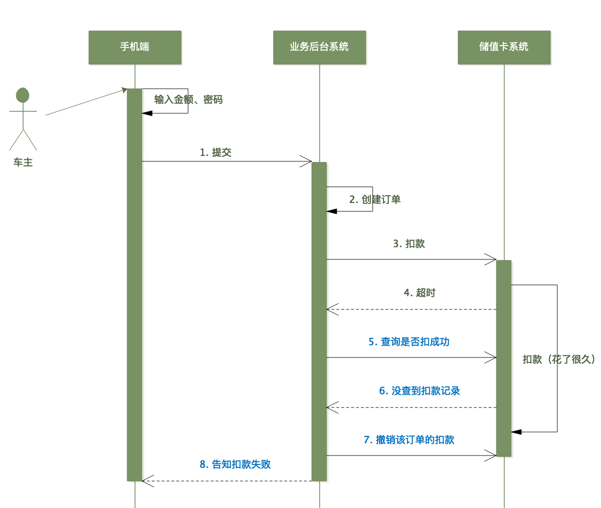
The Timeout at Step 3
You call the card deduction service, and you get... a timeout. Complete silence. You have no way of knowing whether the deduction succeeded or failed.
What is your next move?
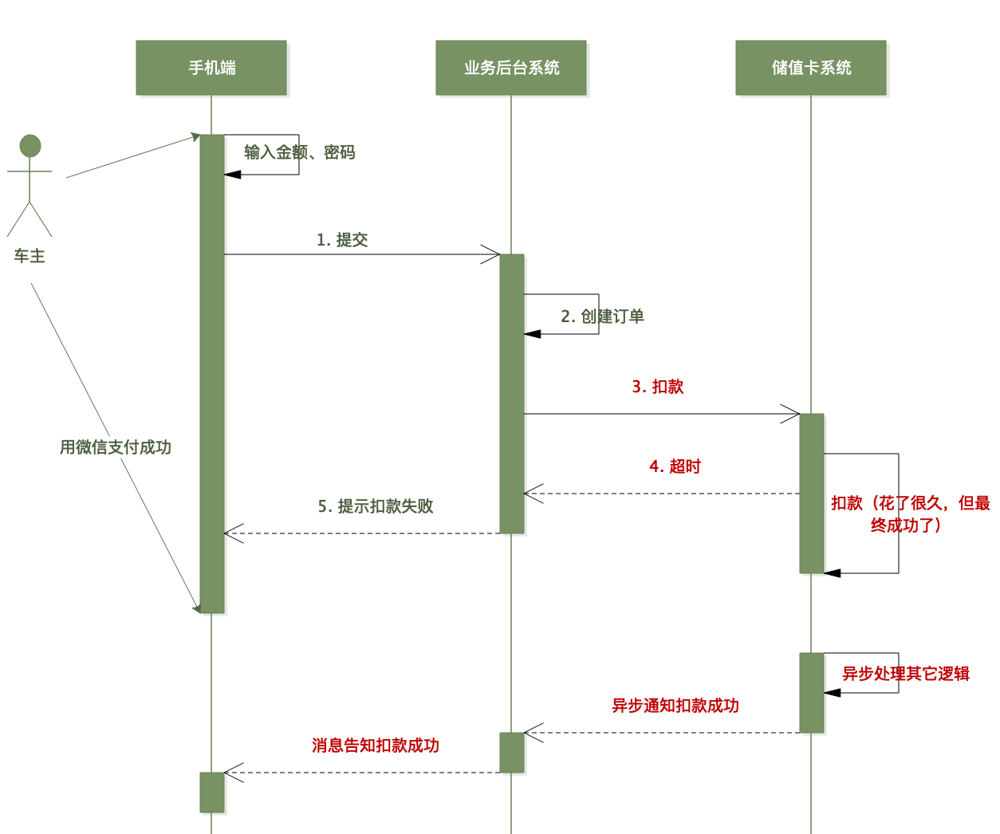
Option A: Return a Failure Status
The simplest approach is to assume the worst and tell the user the payment failed. But consider this: what if the deduction actually succeeded on the card system's end? The network response was lost on the way back, but the user's money is gone. Now they have been charged, but they didn't get their gas.
You cannot simply return "failed." In distributed systems, the absence of a response is not a negative response.
Option B: Query the Result
Okay, let's query the card system to check the status of the transaction. But what if the query also times out? Now you are in an even worse position — you cannot even determine if your monitoring system is reliable.
Even if the query succeeds, the deduction might still be marked as "in progress" or "processing" on the card system's side due to asynchronous processing. This tells you absolutely nothing about the final, immutable outcome.
Option C: Send a Cancel Request
Fine, let's play it safe and send a request to cancel the deduction. If the deduction succeeded, the cancellation will issue a refund; if it didn't succeed, the cancellation will act as a harmless no-op.
But here is the catch: the original deduction request might still be traveling through the network. Your cancellation request could arrive at the card system before the deduction request. The card system processes the cancellation first (treating it as a no-op because no deduction exists yet), and then successfully processes the late-arriving deduction request. The user is charged, while your system believes the transaction was safely cancelled.
The cancellation and the deduction are in a classic race condition, and you have no control over the network order.
Option D: Async Cancellation with Retries
So, you decide to dispatch the cancellation asynchronously and retry it multiple times with a progressive delay. That should neutralize the race condition, right?
But now introduce human behavior: what if the user, seeing no immediate response, clicks the "Pay" button again? Now you have two concurrent deduction attempts in flight, and your cancellation logic is trying to clean up both. The state space of your application is exploding.
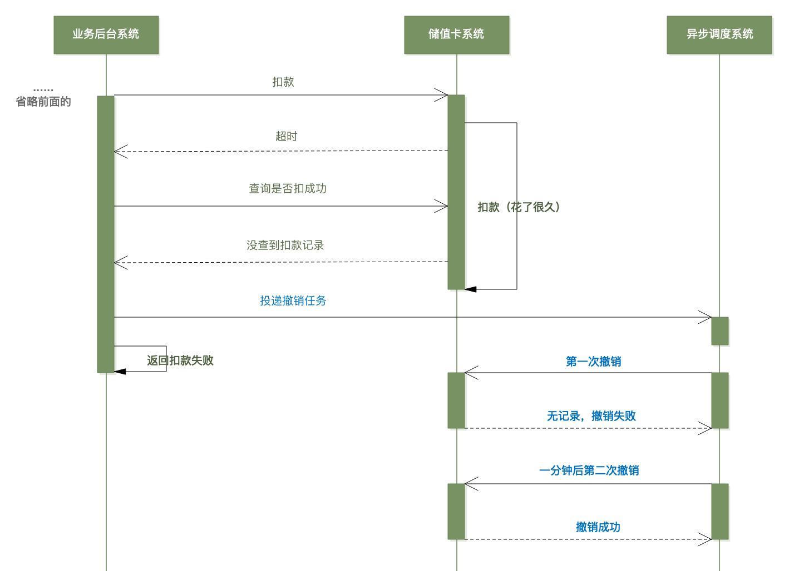
The Root Cause
The fundamental issue here is that your cancellation operation is tied to the order, not to the specific transaction. You are trying to "cancel the order" when you should be saying "cancel this specific deduction attempt."
The solution is to introduce a unique transaction ID (trans_id) that tightly couples each deduction attempt to its corresponding cancellation.
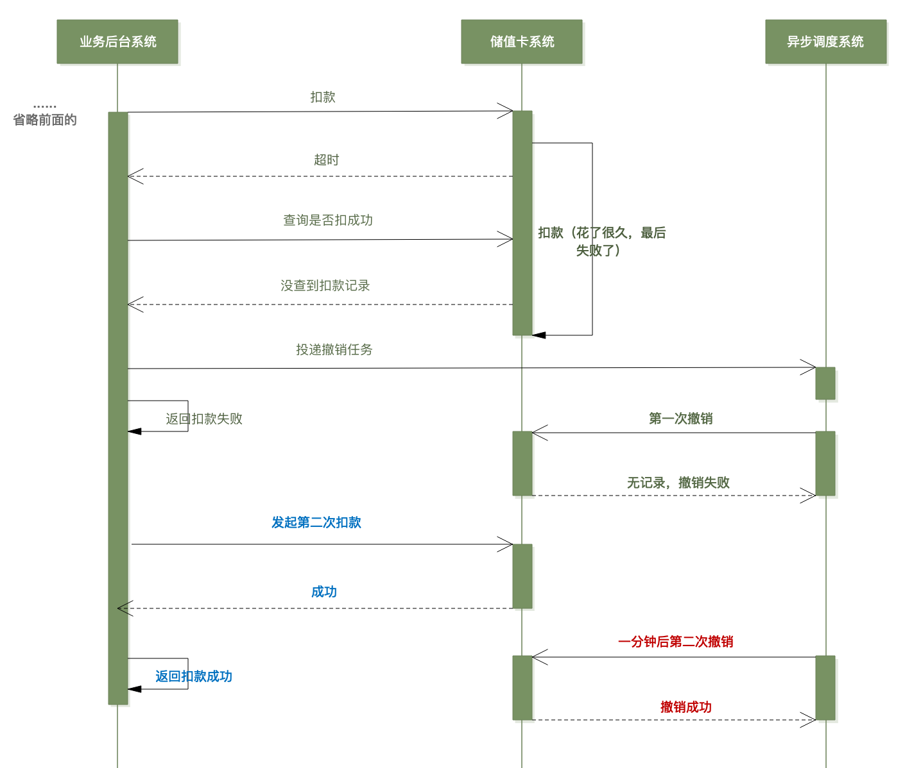
The Solution: Transaction IDs
Generate a unique trans_id for every single deduction attempt and pass it to the card system. When you need to cancel, cancel by that specific trans_id rather than the generic order ID.
Now, the card system can match deductions and cancellations with surgical precision. A cancellation with trans_id = T1 will only ever affect the deduction attempt labeled T1, even if other deduction attempts for the same order are concurrently in flight.
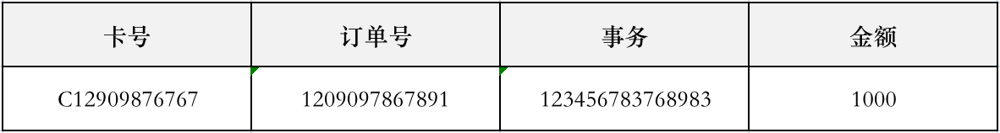
What Should the trans_id Be?
The trans_id must be globally unique, but it also needs to carry ordering information. Why? Because the card system must resolve which operation came first if a deduction and a cancellation for the same ID cross paths.
Using a millisecond-precision timestamp as the foundation of the trans_id (or appending it) offers two key properties:
- Uniqueness: When combined with a node or sequence ID, it guarantees a unique transaction reference.
- Deterministic Ordering: The system can definitively determine which request was initiated first by comparing timestamps.
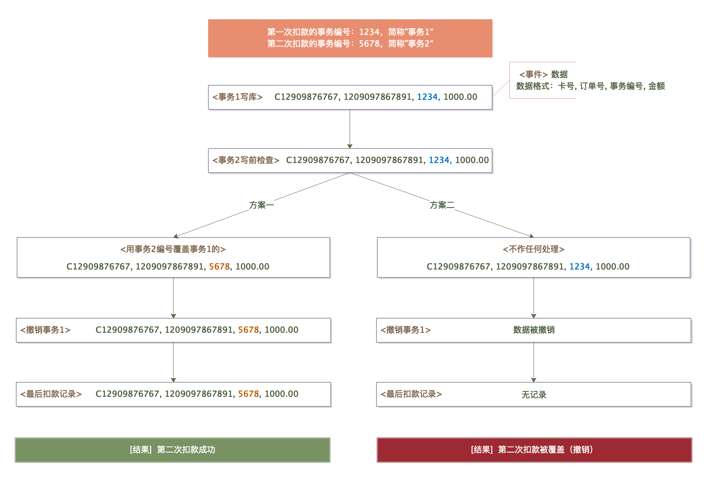
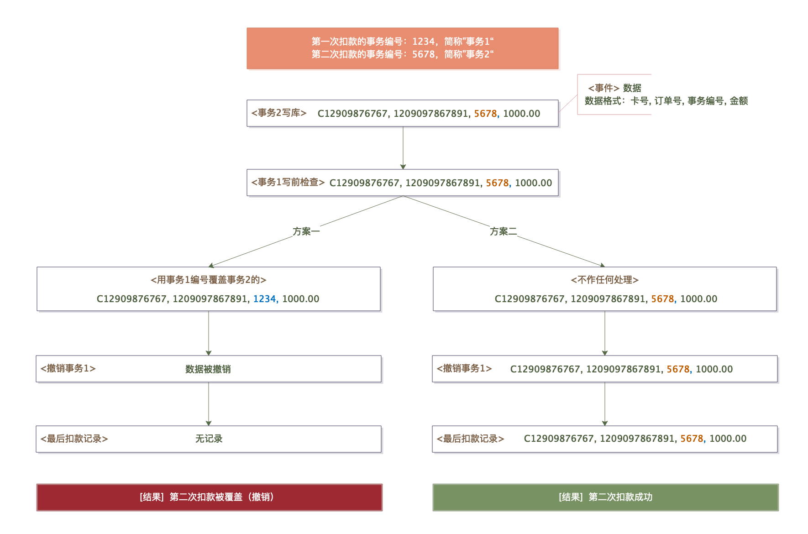
The Complete Robust Flow
Let's trace the fully robust flow using trans_id:
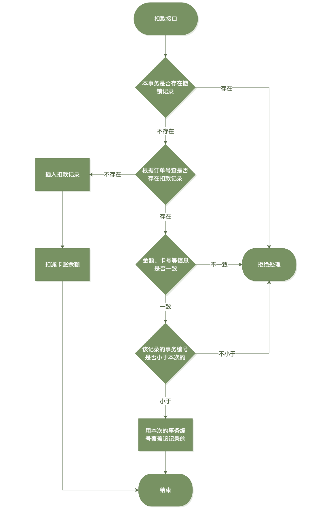
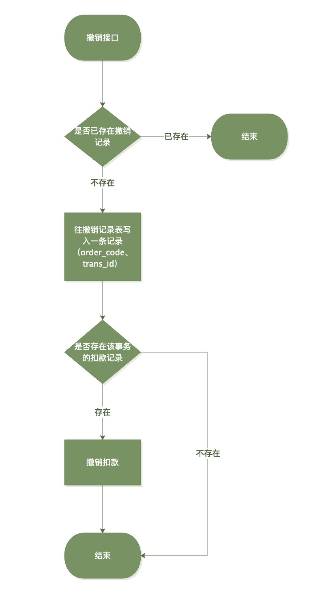
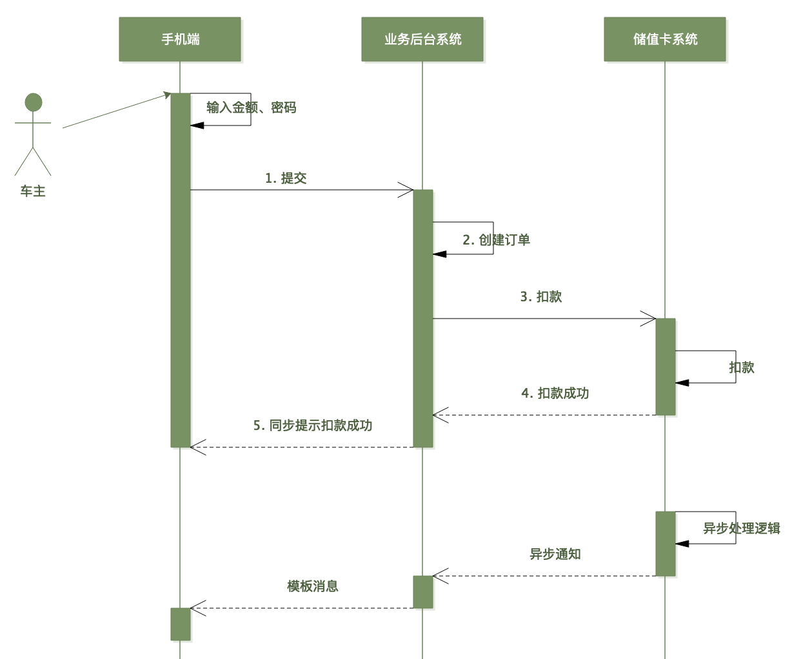
The Deduction Flow
- Generate a
trans_idincorporating the current millisecond timestamp. - Dispatch the deduction request to the card system with this
trans_id. - If a success response is received: Mark the order as paid and terminate the flow.
- If a failure response is received: Mark the order as unpaid and terminate the flow.
- If a timeout occurs: Initiate the recovery flow.
The Recovery Flow (Handling Timeouts)
- Dispatch a cancellation request containing the exact same
trans_id. - The card system resolves the conflict by matching the cancellation against the deduction:
- If the deduction request hasn't arrived yet: The cancellation "wins." The card system records this and rejects the deduction when it eventually arrives.
- If the deduction has already been processed: The deduction "wins." The cancellation triggers an immediate, automated refund.
- If both arrive simultaneously: The card system uses the timestamp metadata to determine the correct logical state.
- Query the card system to confirm the final resolved state of the transaction.
- If the query itself times out, retry using an exponential backoff strategy.
Handling User Retries
If the customer clicks "Pay" again, the client generates a new trans_id (since the millisecond timestamp has advanced). This new attempt is treated as a completely independent transaction by the card system.
Meanwhile, the resolution of the original, timed-out trans_id continues silently in the background, entirely decoupled from the user's second attempt.
Why This Matters
A simple prepaid card deduction — an operation that sounds trivial at first glance — has forced us to confront:
- Network timeouts (the bane of distributed computing)
- Race conditions between concurrent, asynchronous requests
- The critical logical distinction between orders and transactions
- Idempotency and unique transaction identifiers
- Ordering guarantees in non-deterministic networks
And this is merely one step in a single workflow. Real-world enterprise systems contain dozens of such steps, each with its own unique failure modes, cascading into one another.
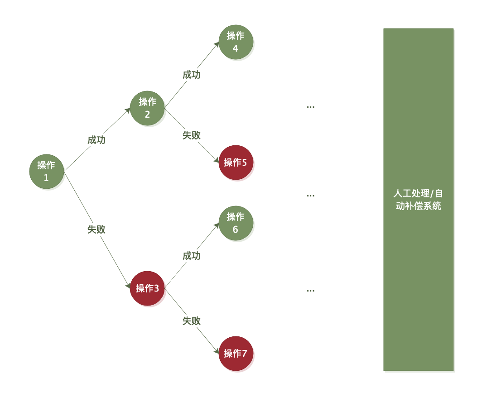
Over 90% of bugs in distributed systems stem from the inadequate or incorrect handling of edge-case failure scenarios.
Coding the happy path is straightforward. The real difficulty — and the true craft of engineering — lies in managing timeouts, retries, partial failures, race conditions, and graceful recovery. These failure scenarios scale combinatorially; every additional network call multiplies the potential failure states of your system.
How to Navigate the Complexity
The solution isn't to over-engineer every line of code, but to match your technical rigor to the cost of failure:
- High Cost of Failure (financial transactions, inventory allocation, medical machinery): Invest heavily in bulletproof robustness. Implement distributed transactions, idempotency keys, distributed locks, and saga patterns.
- Low Cost of Failure (marketing analytics, push notifications, view counters): Keep the architecture simple. Accept occasional data loss or minor duplicates. The engineering cost of over-engineering far exceeds the business cost of a rare, non-critical failure.
- Moderate Cost of Failure: Seek a pragmatic middle ground, such as leveraging eventual consistency with asynchronous background reconciliation instead of expensive, real-time blocking guarantees.
The Engineer's Mindset
Excellent software engineers don't just code for success; they design for failure. Before writing a single line of code, they ask themselves:
- What happens to the system state if this network call times out?
- What if the application container crashes exactly between step 2 and step 3?
- What if this event message is delivered to our subscriber twice?
- What if a customer triggers concurrent requests by double-clicking a button?
This is the essence of "failure-oriented design." It isn't pessimism — it is pragmatism. In distributed architectures, networks partition, services crash, clocks drift, and messages are routinely delayed, duplicated, or lost.
The code written to handle these inevitable failures often accounts for 80% of the codebase. It is also the most challenging 80% to design, test, and debug.
Key Takeaways
- Timeouts are not failures. A timeout simply means "I don't know." Never treat a timeout as a confirmed negative response.
- Decouple operations from transactions. Leverage unique transaction IDs (like
trans_id) to bind related asynchronous events and resolve race conditions. - Design for out-of-order execution. In asynchronous networks, requests will arrive in unexpected sequences. Ensure your protocols are designed to resolve these conflicts deterministically.
- Embrace Idempotency. Every retryable operation must be idempotent. Safe, repeatable operations are the foundation of reliable distributed systems.
- Align robustness with business risk. Not every service requires five-nines availability. Evaluate the business cost of an outage and invest your engineering effort where it matters most.
- Robustness is where the value lies. Anyone can build a working prototype. The true mark of a senior engineer is the ability to build systems that remain resilient when the world goes sideways.